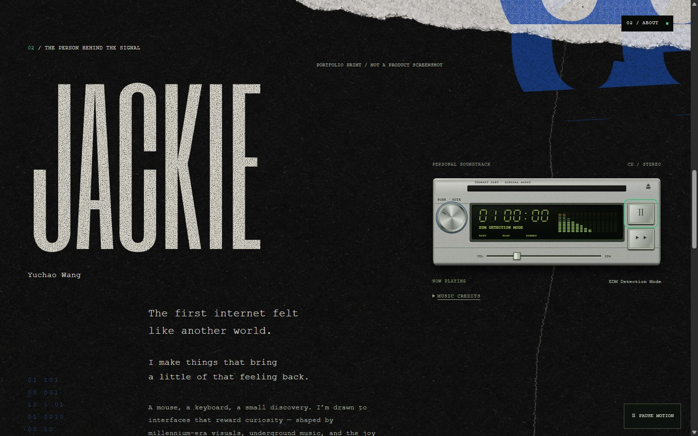
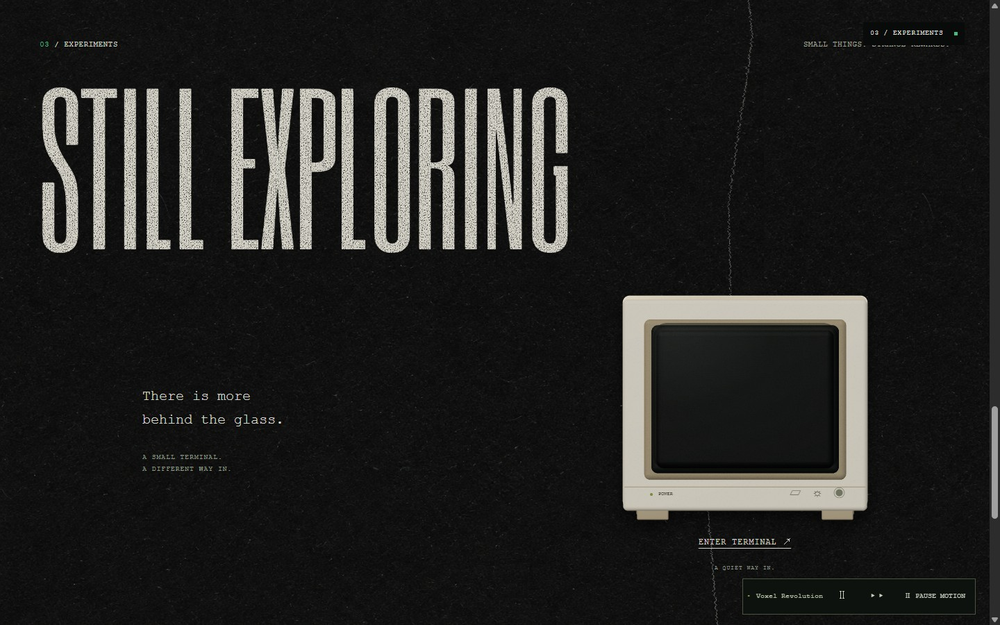
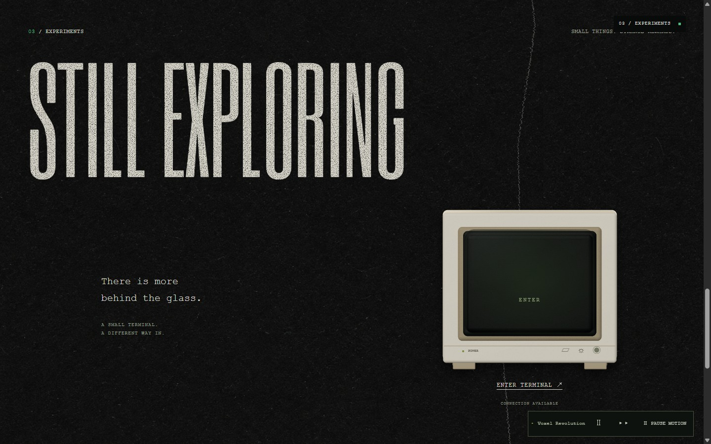
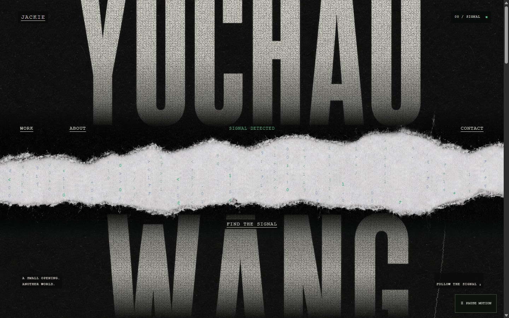
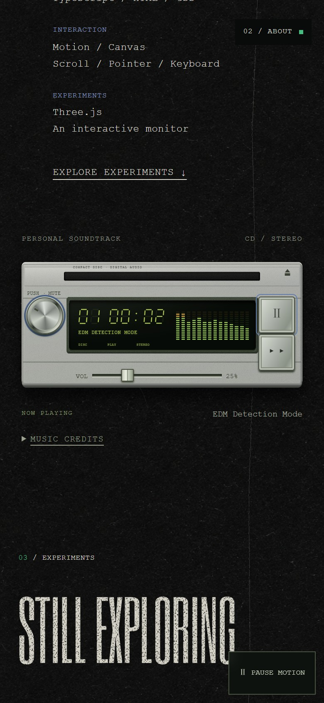

JACKIE — 正面音乐台 / 米色 Monitor
以下均为 localhost:3011 的真实浏览器截图与录屏，不是生成概念图。录像无声；首页音乐需要主动点击播放。





仅本地开发预览，尚未部署。试听曲为 Kevin MacLeod 的许可作品，署名与来源见首页 MUSIC CREDITS。
以下均为 localhost:3011 的真实浏览器截图与录屏，不是生成概念图。录像无声；首页音乐需要主动点击播放。





仅本地开发预览，尚未部署。试听曲为 Kevin MacLeod 的许可作品，署名与来源见首页 MUSIC CREDITS。